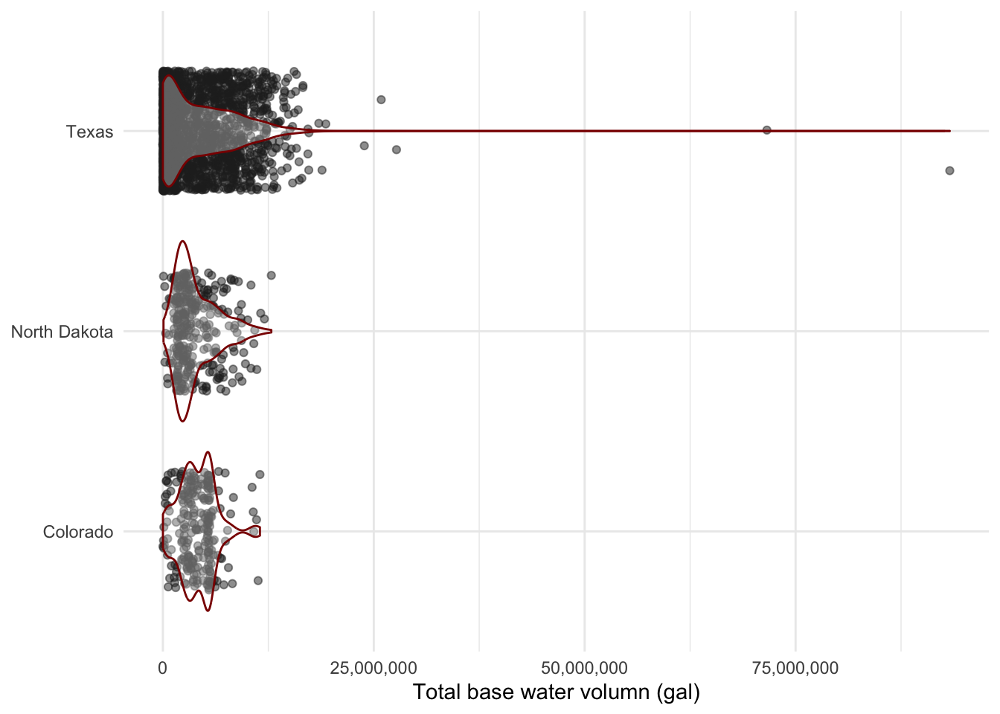

##~~~~~~~~~~~~~~~~~~~~~~~~~~~~~~~~~~~~~~~~~~~~~~~~~~~~~~~~~~~~~~~~~~~~~~~~~~~~~~
## setup ----
##~~~~~~~~~~~~~~~~~~~~~~~~~~~~~~~~~~~~~~~~~~~~~~~~~~~~~~~~~~~~~~~~~~~~~~~~~~~~~~
#..........................load packages.........................
library(tidyverse)
library(janitor)
library(usdata)
#......................import fracking data......................
fracking <- read_csv(here::here("week1", "data", "registryupload_1.csv"))
##~~~~~~~~~~~~~~~~~~~~~~~~~~~~~~~~~~~~~~~~~~~~~~~~~~~~~~~~~~~~~~~~~~~~~~~~~~~~~~
## basic data exploration ----
##~~~~~~~~~~~~~~~~~~~~~~~~~~~~~~~~~~~~~~~~~~~~~~~~~~~~~~~~~~~~~~~~~~~~~~~~~~~~~~
# names(fracking)
# dim(fracking)
# str(fracking)
# summary(fracking)
# View(fracking)
##~~~~~~~~~~~~~~~~~~~~~~~~~~~~~~~~~~~~~~~~~~~~~~~~~~~~~~~~~~~~~~~~~~~~~~~~~~~~~~
## clean/wrangle fracking data ----
##~~~~~~~~~~~~~~~~~~~~~~~~~~~~~~~~~~~~~~~~~~~~~~~~~~~~~~~~~~~~~~~~~~~~~~~~~~~~~~
fracking_clean <- fracking |>
# clean column names ----
janitor::clean_names() |>
# clean up dates ----
mutate(job_start_date = str_remove(job_start_date, " AM")) |> # remove 'AM' from string
mutate(datetime_start = mdy_hms(job_start_date)) |> # convert from string to date (save to new col)
mutate(year = year(datetime_start)) |> # create 'year' col from date
# select relevant cols ----
select(datetime_start, year, state_name, well_name, total_base_water_volume) |>
# make all words title case ----
mutate(state_name = str_to_title(state_name)) |>
# remove rows that have a '?' mark ----
filter(!str_detect(string = state_name, pattern = "\\?")) |> # `?` is a special chr; escape with `\\` prefix
# mutate abbreviations to full state names ----
mutate(state_name = ifelse(test = str_length(state_name) == 2, # if string in 'state_name' col is 2 chrs long
yes = usdata::abbr2state(state_name), # replace abbreviation with full state name
no = state_name)) |> # if string in 'state_name' col is not 2 chrs long, keep state name as-is
# fix misspelled state names ----
mutate(state_name = case_when(
state_name == "Colordao" ~ "Colorado",
state_name == "Loiusiana" ~ "Louisiana",
state_name == "Louisianna" ~ "Louisiana",
state_name == "Lousiana" ~ "Louisiana",
state_name == "New Mexcio" ~ "New Mexico",
state_name == "Norh Dakota" ~ "North Dakota",
state_name == "Norht Dakota" ~ "North Dakota",
state_name == "North Dakota" ~ "North Dakota",
state_name == "North Dakata" ~ "North Dakota",
state_name == "North Dakotta" ~ "North Dakota",
state_name == "Noth Dakota" ~ "North Dakota",
state_name == "Pennslvania" ~ "Pennsylvania",
state_name == "Pennsylavania" ~ "Pennsylvania",
state_name == "Pennsylvanya" ~ "Pennsylvania",
state_name == "Penssylvania" ~ "Pennsylvania",
state_name == "Texasa" ~ "Texas",
state_name == "Texs" ~ "Texas",
state_name == "West Viginia" ~ "West Virginia",
state_name == "Wyominng" ~ "Wyoming",
TRUE ~ state_name # copy over rest of state names from as-is
)) |>
# filter out non-state names ----
filter(!state_name %in% c("Beaver", "Beckham", "Harper", "Hemphill", "Midland", "Red River", "Roosevelt", "Rusk", "State", "Ward")) |>
# create a column of just state abbreviations ----
mutate(state_abb = usdata::state2abbr(state_name)) |>
# move 'state_abb' col after state_name col ----
relocate(state_abb, .after = state_name) |>
# rename 'total_base_water_volume' to 'total_base_water_volume_gal' for clarity ----
rename(total_base_water_volume_gal = total_base_water_volume) |>
# remove obs that don't have a measurement for 'total_base_water_volume_gal' (NA) ----
drop_na(total_base_water_volume_gal) |>
# reorder rows from earliest to most recent `datetime_start` value ----
arrange(datetime_start)
##~~~~~~~~~~~~~~~~~~~~~~~~~~~~~~~~~~~~~~~~~~~~~~~~~~~~~~~~~~~~~~~~~~~~~~~~~~~~~~
## some exploratory data viz + a few plot mods for practice ----
##~~~~~~~~~~~~~~~~~~~~~~~~~~~~~~~~~~~~~~~~~~~~~~~~~~~~~~~~~~~~~~~~~~~~~~~~~~~~~~
fracking_clean |>
filter(state_name %in% c("Texas", "Colorado", "North Dakota")) |>
filter(year == 2015) |>
group_by(state_name) |> # pipe directly into ggplot
ggplot(aes(x = state_name, y = total_base_water_volume_gal)) +
geom_jitter(width = 0.3, alpha = 0.5, color = "gray15") +
geom_violin(color = "red4", alpha = 0.3) +
scale_y_continuous(labels = scales::label_comma()) +
labs(y = "Total base water volumn (gal)") +
coord_flip() +
theme_minimal() +
theme(
axis.title.y = element_blank()
)
There’s almost always more than one correct solution!
Remember, there is rarely (if ever) one single solution to solving a data science problem. If you took different approaches / use different functions / etc. but arrived at the same output, that’s great! Chat with your partner(s) about how your approaches differ from the one below, and why it still got you to the same output.
